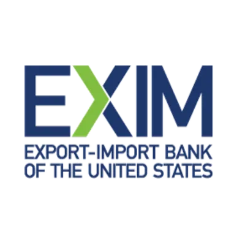
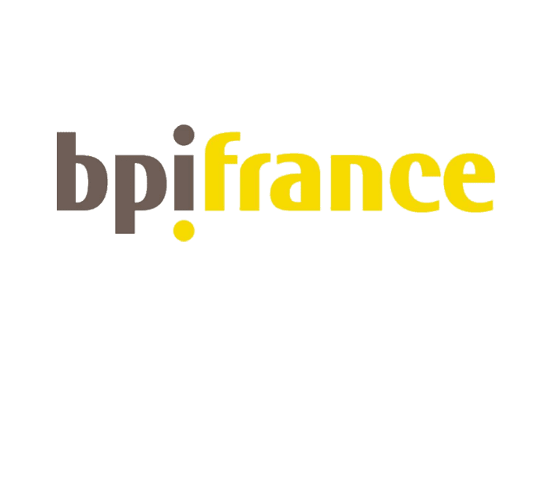
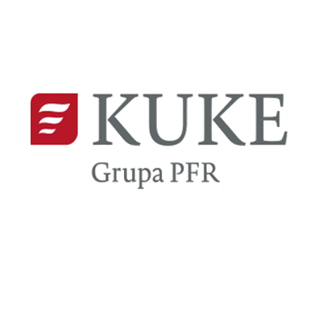
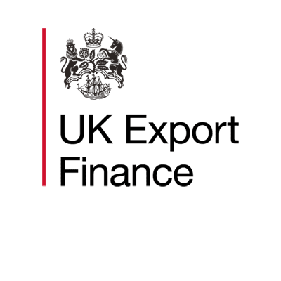

Civil Engineer (MSc) with more than two decades in project, contract and procurement management across Türkiye, Qatar, Dubai and Central Asia. A former Project Coordinator on the World Bank-financed ISMEP program in Istanbul, he has worked under World Bank, EIB, IsDB and AIIB procedures and structured a USD 350 million EPC+F model for solar projects.
Capital-provider ecosystem
Access to the infrastructure finance ecosystem.
Early alignment tests country appetite, export-content eligibility, tenor, risk allocation and the practical route to financial close.








ECAs / Agencies
Euler Hermes / Allianz TradeUKEFCESCESACEBpifranceAtradiusSERVKUKEUS EXIMEDCFinnveraSaudi EXIM BankEksfinEIFOEKNK-SUREKEXIMNEXIOeKBEGAPIndia EximTürk Eximbank
DFIs / MDBs / Public capital
ADBIFCEBRDEIBDFCWorld Bank GroupMIGAAfDBPIDGFMONorfundSwedfundSidaNordic Investment BankBritish International InvestmentQatar Development Bank
Commercial banks / Lenders
SantanderSMBCCIBCCrédit Agricole CIBNatWestMUFGCitiHSBCINGSociété GénéraleStandard CharteredCommerzbankLBBWKfW IPEX-BankJP MorganBank of AmericaBarclaysBBVABNP ParibasDeutsche BankNatixisNordeaIntesa SanpaoloUniCredit
Advisers, insurers & risk partners
DLA PiperNorton Rose FulbrightWatson Farley & WilliamsPinsent MasonsAshurstA&O ShearmanLinklatersMilbankATIDIICIECBPLAonAXA XLSovereign Risk InsuranceVantage RiskTexelChatham FinancialEY
Sponsors, developers & sovereign counterparts
EngieØrstedVestasNational GridXlinksSun Africa & UGT RenewablesVietnam ElectricitySiemensLinxonPIFOman Investment Authority
The institutions listed represent the broader transaction, meeting, advisory and capital-provider universe in which our professionals have worked. References do not imply exclusive partnership, formal mandate or official representation unless expressly stated.